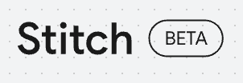
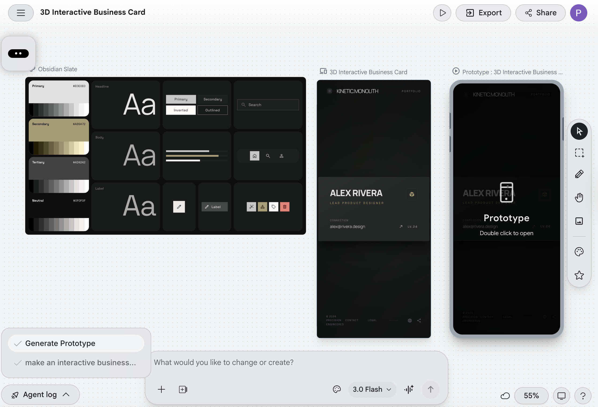
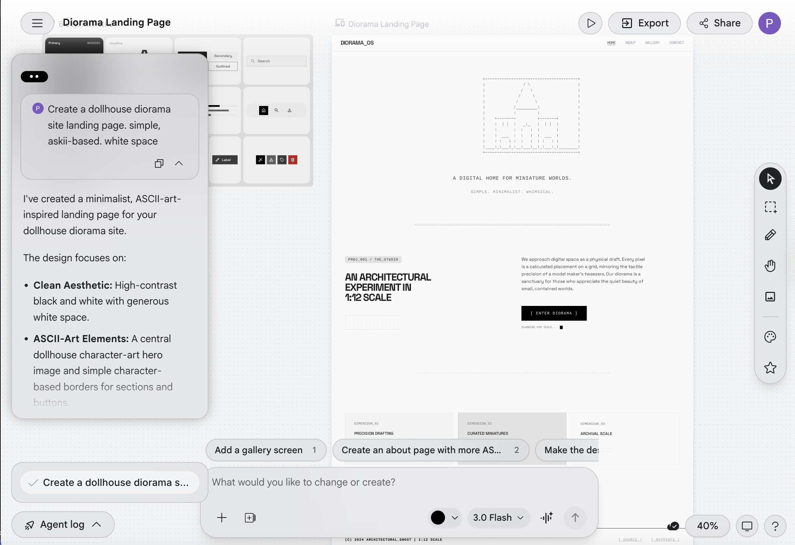

back
In the other half of week 3, we got to experiment with google's new UX/UI AI gen program: google stich. Bluntly, I did not enjoy the idea of this AI. It was a little bit threatening seeing a system take in any prompt, and produce a result pretty instantanousely (Its taking the fun things to do away!! - what will be left?). I did do a few experiemnts with the program, but I don't feel they were very fruitful. The AI produced minimalist styled sites when not given any design directions, and didn't understand (in hindsight - vauge) prompts. Interesting....
I can see this being helpful for some people. Not me though, I struggled to get it to do remotely anything near what I wanted.

This one lacks whimsy.
